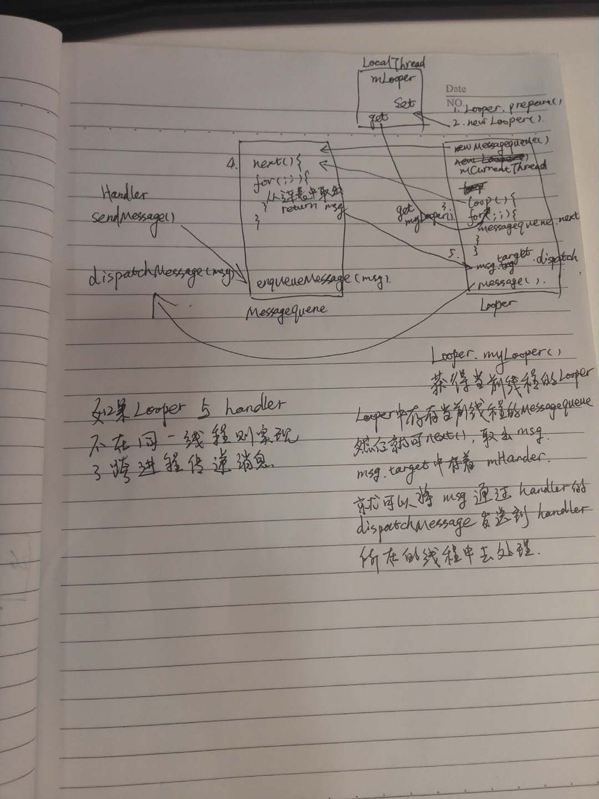

在看此文章之前建议不太了解ThreadLocal的读者先了解下上一篇文章《ThreadLocal源码浅析》，在后文中会有所涉及。
先从Hanlder说起吧，Handler的工作包含发送和接收消息，主要作用是将一个任务切换到某个指定的线程中去执行。发送一条消息的典型过程如下
public final boolean sendMessage (Message msg )
{
return sendMessageDelayed(msg , 0);
}
public final boolean sendMessageDelayed (Message msg, long delayMillis )
{
if (delayMillis < 0) {
delayMillis = 0;
}
return sendMessageAtTime(msg , SystemClock.uptimeMillis() + delayMillis);
}
public boolean sendMessageAtTime (Message msg , long uptimeMillis) {
MessageQueue queue = mQueue;
if (queue == null) {
RuntimeException e = new RuntimeException(
this + " sendMessageAtTime() called with no mQueue");
Log. w("Looper", e.getMessage(), e);
return false ;
}
return enqueueMessage(queue , msg , uptimeMillis);
}
private boolean enqueueMessage(MessageQueue queue, Message msg , long uptimeMillis){
msg.target = this;
if (mAsynchronous ) {
msg.setAsynchronous( true);
}
return queue .enqueueMessage(msg, uptimeMillis);
}
在互相调用的过程中可以发现，最后返回了queue.enqueueMessage(msg,uptimeMillis)。这里的enqueueMessage方法的主要操作其实就是向MessageQueue中插入一条数据（注意：MessageQueue虽然翻译过来是消息队列，但是它的内部存储结构并不是真正的队列，而是采用单链表的数据结构来存储消息列表）。也就是说Handler发送消息的过程仅仅是向MessageQueue中插入了一条消息，MessageQueue的next方法就会返回这条消息给Looper，Looper收到消息后就开始处理了，最终消息由Looper交由Handler处理，即Handler的dispatchMessage方法会被调用（这里说明了这四个类之间的调用逻辑，有个印象即可，后面会进一步分析）。这里有一个地方需要；留意下：msg.target = this;脑子里稍微有个印象就好了，下文中会用到它。下面跟进dispatchMessage
public void dispatchMessage(Message msg) {
if (msg .callback != null) {
handleCallback(msg);
} else {
if (mCallback != null) {
if (mCallback .handleMessage(msg)) {
return;
}
}
handleMessage( msg);
}
}
public interface Callback {
public boolean handleMessage(Message msg);
}
private static void handleCallback(Message message) {
message.callback.run();
}
首先解释下代码中出现的几个对象，msg：Message对象、参数。msg.callback ：Runnable对象。mCallback：Hanlder中的接口对象，实例化Hanlder的时候传参获得引用。如果msg.callback != null, 则调用handleCallback(msg)。方法代码已贴出，可以看到在handleCallback(msg)中调用了message.callback(Runnable对象)的run方法。接下来如果实例化Hanlder的时候获得了Callback引用则调用mCallback的handleMessage方法。再不成功调用handlerMessage(msg)。这个过程比较简单，相信读者都能够很好的理解。 至此我们已经完成了Message经过Hanlder处理的过程，那么在此中间，Message又是怎么存储又怎么传递给Hanlder的呢？客观稍后，下面我们去看一下MessageQueue和Looper（重点）这两个类的源码。 MessageQueue作为Message存储的一个单链表，重要的是两个方法，enqueueMessage和next。enqueueMessage刚已经说过了，其主要操作是向MessageQueue单链表中插入数据。下面主要看一下next方法。
Message next () {
int pendingIdleHandlerCount = -1; // -1 only during first iteration
int nextPollTimeoutMillis = 0;
for (;;) {
if (nextPollTimeoutMillis != 0) {
Binder. flushPendingCommands();
}
// We can assume mPtr != 0 because the loop is obviously still running.
// The looper will not call this method after the loop quits.
nativePollOnce(mPtr, nextPollTimeoutMillis);
synchronized (this ) {
// Try to retrieve the next message. Return if found.
final long now = SystemClock.uptimeMillis();
Message prevMsg = null;
Message msg = mMessages;
if (msg != null && msg.target == null) {
// Stalled by a barrier. Find the next asynchronous message in the queue.
do {
prevMsg = msg;
msg = msg.next;
} while (msg != null && !msg.isAsynchronous());
}
if (msg != null) {
if (now < msg .when) {
// Next message is not ready. Set a timeout to wake up when -
//it is ready.
nextPollTimeoutMillis = (int) Math.min( msg.when - now,
- Integer.MAX_VALUE);
} else {
// Got a message.
mBlocked = false;
if (prevMsg != null) {
prevMsg.next = msg.next;
} else {
mMessages = msg .next;
}
msg.next = null;
if (false ) Log.v("MessageQueue", "Returning message: " +msg);
msg.markInUse();
return msg ;
}
} else {
// No more messages.
nextPollTimeoutMillis = -1;
}
...
}
可以发现next是是一个无限循环的方法，唯一跳出循环的条件是取出MessageQueue中的msg,然后return msg。如果MessageQueue 中没有消息，那么next方法将一直阻塞在这里。当有新消息到来时，next方法会返回这条消息并将其从MessageQueue中删除。 看完Message在MessageQueue中的插入和取出过程后，我们来看下Message是怎么从一个线程切换到指定线程中。这个时候就该Looper出场了。我们在子线程中调用Handler前后会写如下代码：
new Thread(new Runnable() {
@Override
public void run() {
Looper. prepare();
handler.sendMessage(msg);
Looper. loop();
}
});
那么Looper.prepare()和Looper.loop()到底执行了哪些操作呢？先跟进Looper.prepare()源代码
public static void prepare () {
prepare(true);
}
private static void prepare(boolean quitAllowed) {
if (sThreadLocal .get() != null) {
throw new RuntimeException("Only one Looper may be created per thread");
}
sThreadLocal.set(new Looper(quitAllowed ));
}
static final ThreadLocal<Looper> sThreadLocal = new ThreadLocal<div>();
private Looper( boolean quitAllowed ) {
mQueue = new MessageQueue(quitAllowed );
mThread = Thread. currentThread();
}
prepare方法相关代码已贴出。首先，我们注意到Lopper的构造方法中实例化了一个MessageQueue，并且将当前线程保存起来。值得一提的是这里出现了sThreadLocal，上篇浅析过ThreadLocal源码，在这里set里放进了一个Looper对象，相当于当前线程(key)的value对应着这个Looper对象。这里似乎还还不太出来sThreadLocal这个对象的作用，不要着急，它的作用马上在Looper.loop（）中显现出来了。跟进loop方法。
public static void loop() {
final Looper me = myLooper ();
if (me == null) {
throw new RuntimeException("No Looper; Looper.prepare() wasn't called on this thread.");
}
final MessageQueue queue = me .mQueue ;
// Make sure the identity of this thread is that of the local process,
// and keep track of what that identity token actually is.
Binder. clearCallingIdentity();
final long ident = Binder.clearCallingIdentity();
for (;;) {
Message msg = queue.next(); // might block
if (msg == null) {
// No message indicates that the message queue is quitting.
return;
}
// This must be in a local variable, in case a UI event sets the logger
Printer logging = me. mLogging;v
if (logging != null) {
logging.println( ">>>>> Dispatching to " + msg.target + " " +
msg.callback + ": " + msg.what );
}
msg.target.dispatchMessage( msg);
if (logging != null) {
logging.println( "<<<<< Finished to " + msg.target + " "+msg. callback);
}
// Make sure that during the course of dispatching the
// identity of the thread wasn't corrupted.
final long newIdent = Binder.clearCallingIdentity();
if (ident != newIdent ) {
Log. wtf(TAG, "Thread identity changed from 0x"
+ Long. toHexString(ident) + " to 0x"
+ Long.toHexString(newIdent) + " while dispatching to "
+ msg.target.getClass().getName() + " "
+ msg.callback + " what=" + msg.what );
}
msg.recycle();
}
}
/**
* Return the Looper object associated with the current thread. Returns
* null if the calling thread is not associated with a Looper.
*/
public static Looper myLooper() {
return sThreadLocal .get();
}
在loop方法中第一句就调用了myLooper()这个方法，其中返回了我们在prepare()方法中存放进去的Looper对象。分析到这里，后面的异常什么的就很容易理解了，必须要先set才能get的到嘛。 在for(;;)中又是一个死循环，还记得我们在哪里见过死循环吗？没错，就是MessageQueue的next()方法。。先说下这个死循环，首先执行MessageQueue.next方法，不断的从MessageQueue中取出消息（同时将Message从MessageQueue中移除）。MessageQueue的next方法没有msg会一直停留在next()方法中，所以只有执行Loop.quit/quitSafely才会跳出循环。如果MessageQueue中有Message则执行msg.target.dispatchMessage(msg)。 上文分析Hanlder的enqueueMessage 方法（发送消息其实就是向MessageQueue 中插入Message）时提到请留意msg.target =this。这里就要用上了，在Hanlder中发送Message的时候，我们将msg.target引用到了调用的Hanlder，也就是说这个Message是记得哪个Hanlder把它插入到MessageQueue的。接下来就好办了，既然知道是哪个Handler把Message插入MessageQueue。那么就可以调用相应hanlder的dispatchMessage(msg)，而调用者handler未必就在Looper.loop()方法所在线程中。在此，就成功的将Message切换到相应的线程中去了。 在文章即将结尾之际，还有一个小知识点补充说明下。Looper也是可以退出的，Looper有两种退出的方法，quit()和quitSafely()。二者区别是：quit会直接退出Looper，而quitSafely只是设定一个退出标记，然后把MessageQueue中的Message处理完毕后才安全地退出。Looper退出后，通过Handler发送的消息会失败，这个时候Handler的send方法会返回false。在子线程中如果手动为其创建了Looper，那么在所有的事情完成以后，应该立即调用quit方法来终止消息循环，否则这子线程就会一直处于等待状态。而如果退出Looper以后，这个线程就会立即终止。
在子线程中调用Looper.prepare()中执行的操作：将当前Looper对象所在线程引用当做key存入ThreadLocal.table数组中，将当前Looper对象作为value存入。 Handler.sendMessage(msg)执行的操作：首先msg保存调用者handler的对象（msg.target=this），然后将msg插入MessageQueue。 Looper.loop()执行的操作：从ThreadLocal中获取1中存入的Looper对象。loop方法是个死循环，不断从MessageQueue中获取message（MessageQueue.next）,直到MessageQueue的next方法返回null才跳出循环。next()方法也是一个死循环，MessageQueue中没有Message则一直阻塞。此时loop()方法也一直处于阻塞状态。 除非调用Looper的quit()或者quitsafely()方法（有点像代理模式，其实真正执行的是MessageQueue的quit或者quitsafely），此时强制Looper退出。否则Looper不会退出，loop方法无限循环下去。MessageQueue中一旦有消息到达，Looper.next()方法就会调用msg.target.dispatchMessage( msg)。将消息交给msg引用的调用者handler处理消息。
理解图